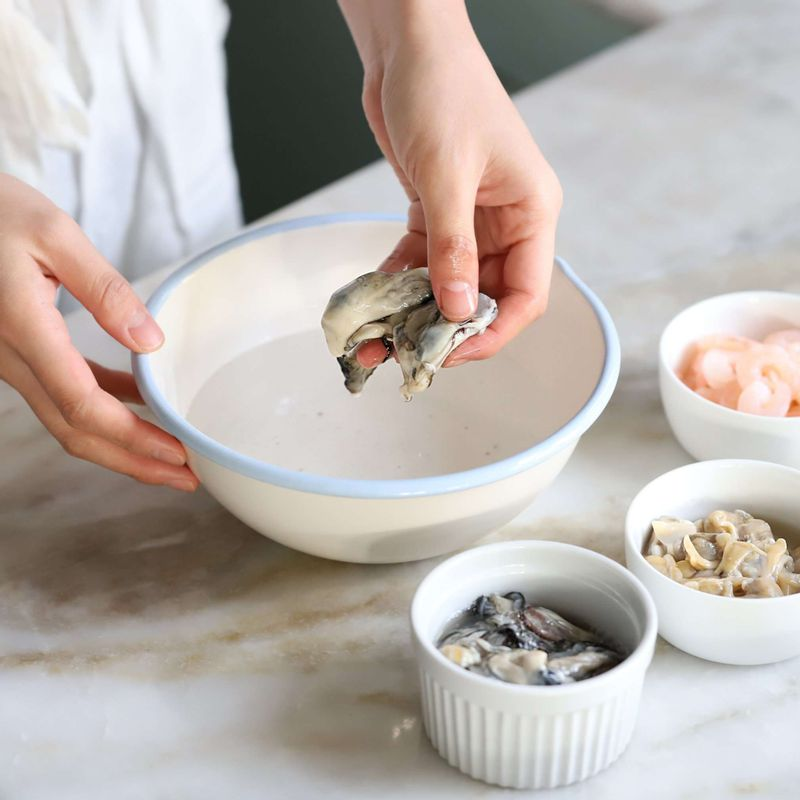
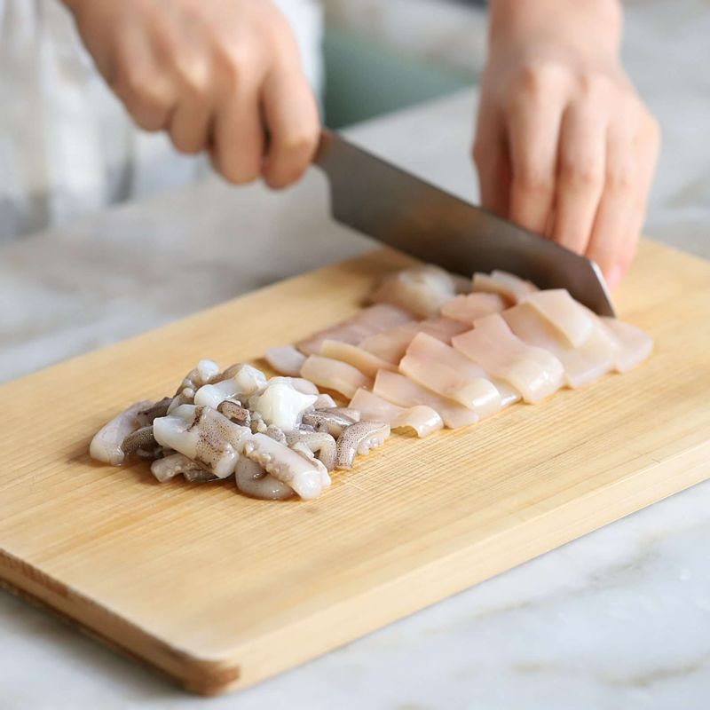
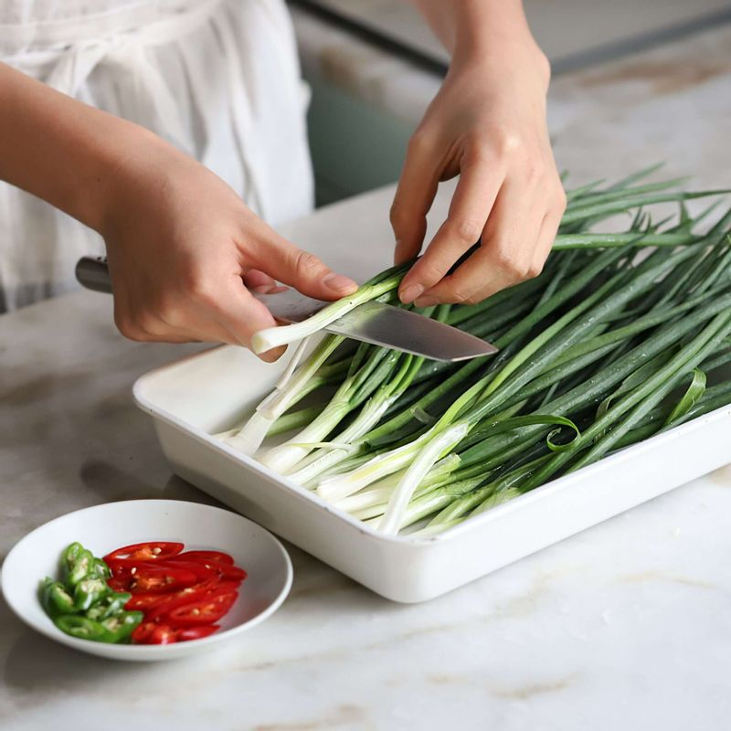
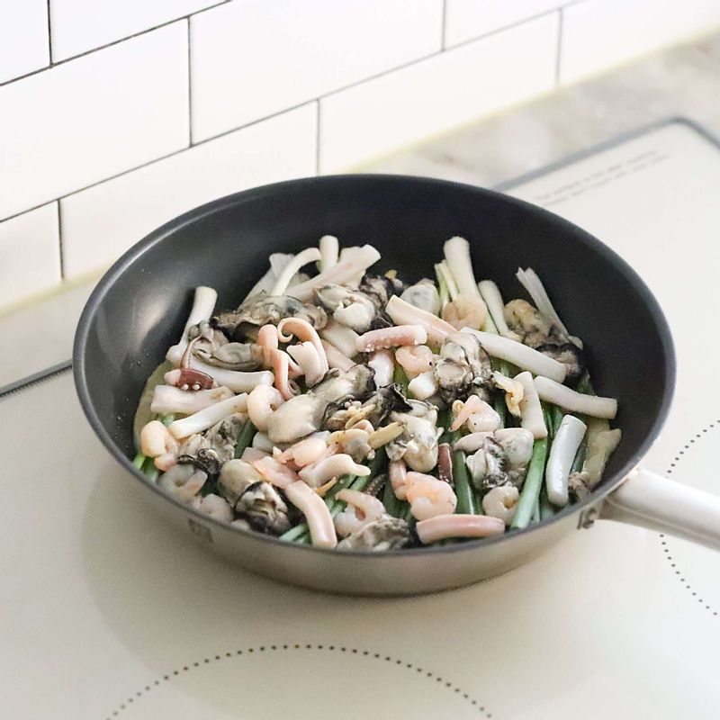
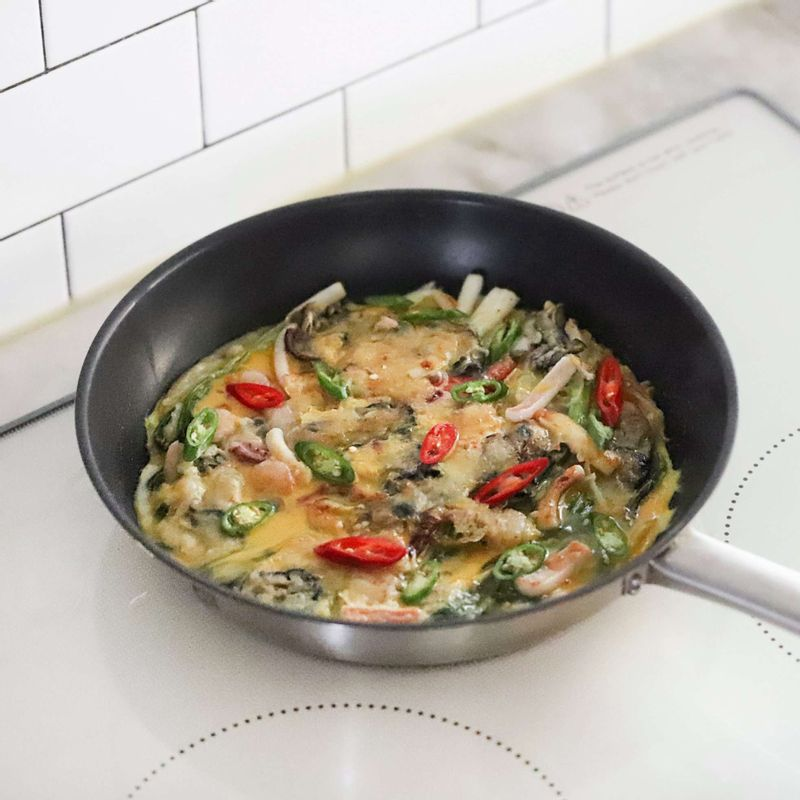

-

오징어는 껍질을 벗겨 잘게 자르고 새우살과 굴, 조갯살은 소금물에 흔들어 씻어주세요..
-

냄비에 물 2컵과 약간의 소금을 넣고, 끓어오르면 손질한 해물을 넣어 30초 정도 살짝 데쳐주세요.
-

쪽파는 다듬어 깨끗이 씻은 후 쪽파의 머리부분이 굵으면 반으로 가르고, 프라이팬 길이에 맞게 잘라주세요. 홍고추, 청양고추는 어슷하게 썰어주세요.
-

볼에 반죽재료를 넣어 섞고, 달걀은 약간의 소금을 넣고 풀어 달걀물을 만들어주세요.
-

달군 팬에 기름을 넉넉히 두르고, 반죽을 한 국자 올려 둥글게 펴주세요. 그 위에 쪽파를 가지런히 펼쳐 얹고, 해물을 올린 후 반죽을 살짝 뿌려주세요.
-

앞, 뒤를 노릇노릇하게 지져내고 한 면에 청양고추와 홍고추, 계란물을 올리고 뒤집어 익힌 후 불을 꺼주세요.
-
접시에 해물파전을 담고 전간장을 곁들여 주세요.